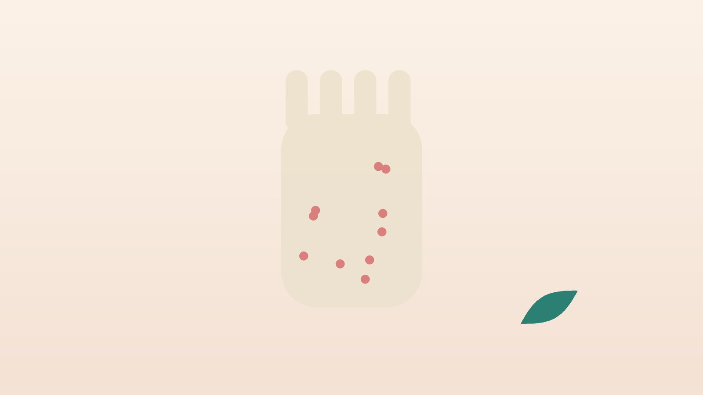

건강 칼럼 · 인천 접촉성피부염 한의원
닿은 자리가 붉고 가렵다면, 접촉성피부염 관리

닿은 자리의 발진, 이런 모습인가요?
- 귀걸이, 시계 뒷면, 청바지 단추가 닿는 곳만 붉고 가렵다
- 염색한 뒤 하루 이틀 지나 이마선, 귀 뒤, 목덜미가 붉어졌다
- 고무장갑을 낀 손등과 손목에 발진이 생긴다
- 새 화장품이나 자외선 차단제를 바른 뒤 얼굴이 따갑고 붉다
- 설거지와 손 씻기가 잦은 뒤로 손이 트고 갈라진다
- 휴가 때는 가라앉았다가 일터로 돌아가면 다시 올라온다
이 체크리스트는 진단 도구가 아니라 상담이 필요한지 가늠해 보는 참고용입니다.
자극성과 알레르기성은 어떻게 다른가요?
자극성 접촉피부염은 누구에게나 생길 수 있는 반응입니다. 세제, 소독제, 물, 마찰처럼 피부 장벽을 직접 손상시키는 자극이 반복되면, 많이 닿은 곳부터 화끈거리고 트며 갈라집니다. 미용사, 조리사, 간호사, 집안일을 도맡는 분의 손에 흔하고, 자극이 셀수록, 자주 닿을수록 심해지는 것이 특징입니다.
알레르기성 접촉피부염은 특정 물질에 면역이 한 번 예민해진 사람에게만 생기는 지연형 반응입니다. 닿고 나서 보통 하루에서 사흘 뒤에 가려운 발진과 작은 물집이 올라오고, 닿은 자리를 넘어 주변으로 번지기도 합니다. 흔한 원인으로는 장신구와 단추의 니켈, 염색약의 파라페닐렌디아민(PPD), 고무장갑에 쓰이는 고무 가속제, 화장품의 향료와 보존제가 꼽힙니다. 미국 알레르기·천식·면역학회 등이 함께 낸 접촉피부염 진료 지침은 원인이 분명하지 않거나 오래 반복되면 첩포검사로 원인 물질을 확인하도록 권합니다. 등에 시험 물질을 붙여 이틀 뒤 떼고, 그 뒤 하루 이틀 더 지나 다시 판독하는 방식입니다.
응급실이나 피부과 진료가 먼저인 신호
- 염색 후 얼굴과 눈두덩이 심하게 붓고 숨이 차거나 목이 조인다 → 즉시 응급실
- 입술과 혀가 붓거나 온몸에 두드러기가 번진다
- 물집이 넓게 터지고 진물, 고름, 열이 함께 있다
- 얼굴과 눈 주위, 생식기에 심한 발진이 생겼다
- 2~3주 피해도 낫지 않거나 원인을 도무지 모르겠다
염색약이나 고무(라텍스)에 대한 반응은 드물게 전신 알레르기로 이어질 수 있어, 숨쉬기 불편이 함께 있다면 지체하지 말고 119에 연락하세요. 감염이 겹친 경우에는 항생제 치료가 먼저입니다.
한의학은 접촉성피부염을 어떻게 보나요?
옛 의서에는 옻나무에 닿아 피부가 붉게 부어오르고 가려운 것을 칠창(漆瘡)이라 하여 따로 기록해 두었습니다. 특정 물질이 닿은 사람에게만 탈이 난다는 점, 사람마다 타고난 바탕에 따라 반응이 다르다는 점을 이미 알고 있었던 셈입니다.
한의학에서는 밖에서 들어온 자극을 풍독(風毒)으로, 피부에 머문 붉은 열과 진물을 습열(濕熱)로 봅니다. 급하게 올라온 시기에는 열과 습을 식히고 걷어 내는 데, 오래되어 피부가 두꺼워지고 갈라진 시기에는 메마른 피부를 적시고 혈을 보하는 데 무게를 둡니다. 같은 사람이라도 시기에 따라 처방의 방향이 바뀌는 이유입니다.
나는 어떤 유형일까?
1. 풍열(風熱) 갑자기 붉게 오르는 유형
- 이런 분에게 많아요
- 새 제품을 쓰고 며칠 만에 얼굴이 뒤집어진 분
- 나타나는 모습
- 붉고 화끈거리며 가렵고 조금 부어오른다
- 함께 오는 몸의 신호
- 얼굴 열감, 목 마름
- 진찰에서 보이는 모습
- 혀끝이 붉고 맥이 뜨고 빠름
- 치료 방향
- 열을 식히고 풍을 흩는 방향 (소풍산 계열)
- 오늘부터 해 볼 것
- 의심 제품을 모두 멈추고 찬 물수건을 대 보세요.
2. 습열(濕熱) 물집과 진물 유형
- 이런 분에게 많아요
- 손이나 귀 뒤에 물집이 잡힌 분
- 나타나는 모습
- 작은 물집이 모여 터지고 진물이 흐른다
- 함께 오는 몸의 신호
- 몸이 무겁고 소변이 진함
- 진찰에서 보이는 모습
- 설태가 누렇고 끈적함
- 치료 방향
- 습열을 맑혀 진물을 말리는 방향 (용담사간탕 계열)
- 오늘부터 해 볼 것
- 긁지 말고 진물 부위는 깨끗한 거즈로 덮어 두세요.
3. 혈허풍조(血虛風燥) 트고 갈라지는 유형
- 이런 분에게 많아요
- 물일이 잦아 손이 만성으로 거친 분
- 나타나는 모습
- 피부가 두꺼워지고 갈라지며 밤에 더 가렵다
- 함께 오는 몸의 신호
- 피로, 피부 건조, 손톱이 잘 깨짐
- 진찰에서 보이는 모습
- 혀가 옅고 맥이 가늚
- 치료 방향
- 혈을 보하고 메마른 피부를 적시는 방향 (당귀음자 계열)
- 오늘부터 해 볼 것
- 물일 뒤 3분 안에 보습제를 바르세요.
한의원에서는 어떻게 진찰하나요?
- 노출 문진: 직업, 집안일, 취미, 최근 바꾼 화장품·세제·장신구를 하나씩 여쭙고 발진의 위치와 연결해 봅니다.
- 병변 관찰: 물집, 진물, 두꺼워짐, 갈라짐의 정도로 급성인지 만성인지 구분합니다.
- 검사 결과 확인: 피부과 첩포검사 결과가 있다면 함께 보고 피해야 할 성분을 정리합니다.
- 설진·맥진: 혀와 맥, 소화와 수면 상태로 체질과 유형을 판단합니다.
침·약침·한약 치료는 어떻게 하나요?
1. 침 치료
- 곡지(曲池): 팔꿈치를 굽혔을 때 생기는 주름 바깥 끝. 피부의 열을 내리는 데 씁니다.
- 혈해(血海): 무릎을 폈을 때 무릎뼈 안쪽 위 끝에서 위로 두 치 올라간 볼록한 근육. 혈의 열을 식히고 가려움을 덜어 줍니다.
- 풍시(風市): 차렷 자세에서 허벅지 바깥쪽 가운데손가락 끝이 닿는 곳. 가려움에 씁니다.
- 음릉천(陰陵泉): 무릎 안쪽 아래 정강뼈 모서리의 오목한 곳. 몸에 쌓인 습을 걷어 냅니다.
발진 부위를 직접 찌르기보다 떨어진 곳의 혈자리를 주로 쓰며, 진물이 있는 피부에는 침을 놓지 않습니다.
2. 약침
만성으로 가려움이 이어지는 분에게 열을 식히는 약침을 관련 경혈에 소량 적용합니다. 급성으로 넓게 진물이 나는 시기에는 피부가 안정된 뒤에 시작합니다.
3. 한약
유형에 맞춘 탕약을 기본으로 하고, 가려움 때문에 잠을 설치는 분은 수면을 함께 살핍니다. 피부과 연고나 항히스타민제를 쓰고 계시면 알려 주시면 확인해 처방하며, 임신 중이라면 진료 때 꼭 알려 주세요. 한약은 원장이 원내 탕전실에서 약재 선별부터 달이는 과정까지 직접 관리하며, 10일분씩 처방해 복용 경과를 보고 약재 구성과 양을 조절합니다.
원장님이 네이버 블로그에 진료 이야기와 건강 정보를 꾸준히 올리고 있습니다. 더 많은 이야기는 블로그에서 확인해 보세요.
블로그 보기치료는 어떤 순서로 진행되나요?
- 원인 찾기 노출 일지와 검사 결과로 의심 물질을 좁히고 피하는 방법을 정합니다.
- 1~2주 가려움과 진물을 가라앉히는 데 집중해 주 2회 안팎 침 치료와 탕약을 진행합니다.
- 3~6주 피부 장벽 회복과 보습 습관을 다지고 처방을 조정합니다.
- 유지기 원인을 피하는 생활이 자리 잡으면 간격을 넓히고, 다시 올라올 때 일찍 관리합니다.
원인 물질을 계속 만지면 어떤 치료도 효과가 오래가지 않아, 피할 물질 목록을 정리하는 데 처음 시간을 들입니다.
재발을 줄이는 생활 관리
- 장갑 두 겹: 물일에는 면장갑 위에 고무장갑을 끼고, 고무에 반응한다면 니트릴이나 비닐 장갑으로 바꿉니다.
- 니켈 차단: 귀걸이는 티타늄이나 수술용 스테인리스 제품을 고르고, 청바지 단추 안쪽에는 투명 매니큐어나 천을 덧댑니다.
- 새 화장품은 시험부터: 팔 안쪽에 며칠 발라 보고 이상이 없을 때 얼굴에 씁니다.
- 염색 전 확인: 염색약 설명서에 있는 피부 시험을 매번 하고, 한 번이라도 반응이 있었다면 같은 계열 염색약은 피합니다.
- 손 씻기 후 보습: 뜨거운 물 대신 미지근한 물을 쓰고, 향이 없는 보습제를 자주 덧바릅니다.
다른 진료가 함께 필요한 경우
- 원인을 모르고 반복된다면 피부과에서 첩포검사를 받아 보세요.
- 직업 때문에 생긴 피부염이라면 작업 환경을 바꾸는 상담이 필요할 수 있습니다.
- 진물에 고름과 열이 생기면 감염을 먼저 치료하세요.
- 넓은 부위에 갑자기 퍼졌다면 단기간 스테로이드 치료가 필요할 수 있습니다.
자주 묻는 질문 Q&A
- Q1. 습진과 접촉성피부염은 같은 건가요?
- 접촉성피부염은 습진의 한 종류로, 원인이 바깥 물질이라는 점이 다릅니다. 그래서 원인을 찾아 피하는 것이 가장 중요합니다.
- Q2. 예전엔 괜찮던 금속에 왜 갑자기 반응하나요?
- 알레르기성 반응은 오래 노출되다가 어느 순간 몸이 예민해지면서 시작될 수 있습니다. 한 번 생기면 대개 오래 유지됩니다.
- Q3. 첩포검사는 어디서 하나요?
- 피부과에서 받을 수 있습니다. 검사 결과지를 가져오시면 생활 관리에 함께 반영합니다.
- Q4. 천연 염색약이나 헤나는 괜찮나요?
- 제품에 따라 PPD가 섞인 경우가 있어 성분을 꼭 확인해야 합니다. 검게 물드는 헤나 문신도 주의하세요.
- Q5. 연고를 바르면서 한약을 먹어도 되나요?
- 함께 쓰는 경우가 많습니다. 쓰고 있는 약을 알려 주시면 확인해 처방합니다.
- Q6. 치료는 얼마나 걸리나요?
- 원인을 피하면 급성은 몇 주 안에 가라앉는 경우가 많고, 손처럼 만성인 경우는 6주 이상 경과를 봅니다.
- Q7. 물집을 터뜨려도 되나요?
- 일부러 터뜨리면 감염 위험이 커지니 그대로 두고 깨끗하게 유지하세요.
- Q8. 한 번 생긴 알레르기가 없어지나요?
- 대개 오래 남기 때문에 원인 물질을 계속 피하는 것이 가장 확실한 예방입니다.
문원열 대표원장한의사 · 365스마일한의원
임상 경력 15년, 인천 서구 가정동에서 개원 후 10년째 진료하고 있으며, FCST 턱관절학회·연부조직학회·침도학회 등에서 활동합니다. 아픈 곳만이 아니라 증상의 원인을 찾아 진료합니다.
진료 안내
- 진료시간
- 평일 09:00~20:00 (점심시간 13:00~14:00, 접수 마감 19:30)
토·일·공휴일 09:00~15:00 (접수 마감 14:30) - 주소
- 인천광역시 서구 가경주로 46, 2층 (가정동)
인천2호선 가정중앙시장역 인근
영상으로 길 안내 보기 → - 주차
- 한의원 건물 바로 앞 1층 도원주차장
- 예약
- 예약 바로가기 또는 전화 예약
진료시간은 사정에 따라 바뀔 수 있으니 방문 전 전화로 확인해 주세요.
함께 읽으면 좋은 칼럼
건강 칼럼 전체 보기 →
참고 자료
- Fonacier L, et al. Contact dermatitis: a practice parameter—update 2015. Journal of Allergy and Clinical Immunology: In Practice, 2015
- Johansen JD, et al. European Society of Contact Dermatitis guideline for diagnostic patch testing. Contact Dermatitis, 2015
- 질병관리청 국가건강정보포털 — 원문
※ 이 글은 일반적인 건강 정보이며, 개인의 상태에 따라 치료 방법과 결과는 다를 수 있습니다. 정확한 진단과 치료는 진료를 통해 결정됩니다. 침·약침 시술 후 드물게 멍, 통증 등이 생길 수 있습니다.